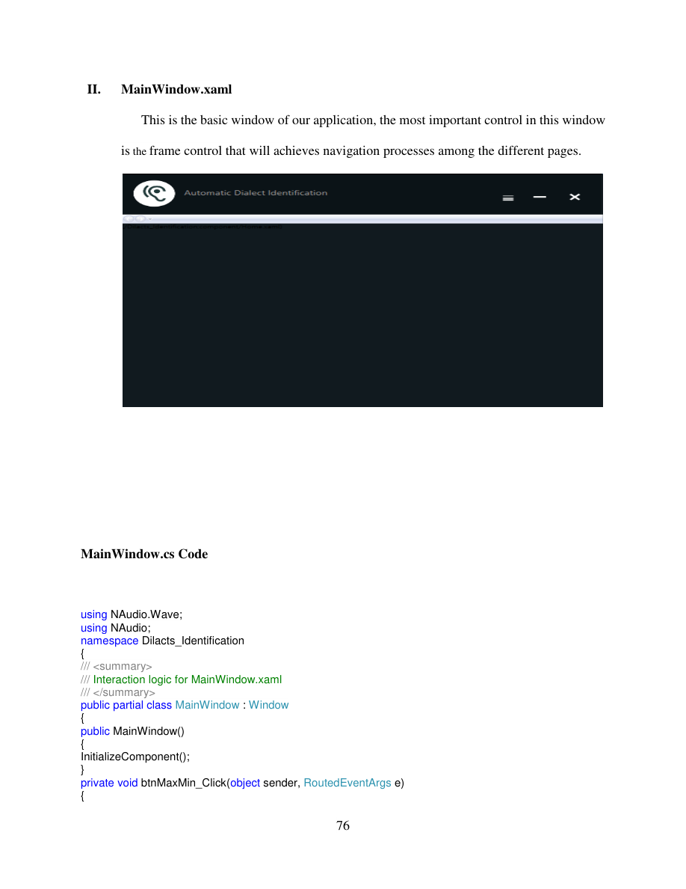
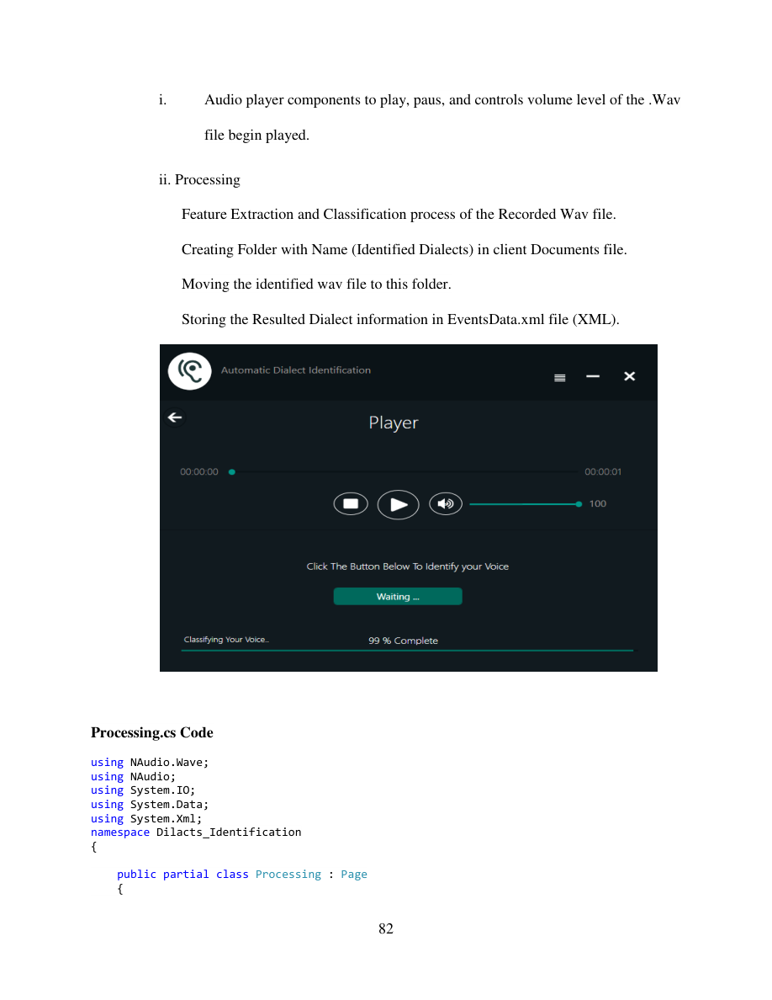
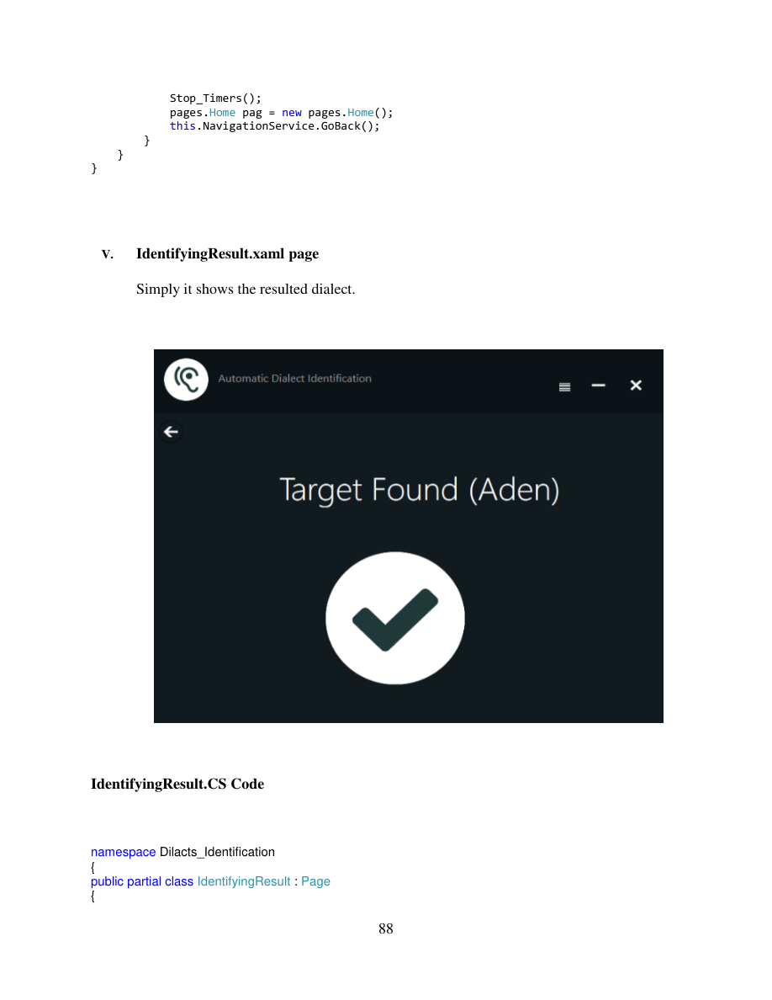

From speech to dialect
The graduation project compared how speakers of Adeni, Dalai, Hadhrami, Lahji, and Sanaani pronounced السلام عليكم. The study accepted 80 of 125 recordings and compared mel-frequency cepstral coefficients (MFCCs) with Haar and Daubechies 4 (DB4) wavelet features.
- Training
- Preprocess labeled speech, extract acoustic features, then train a supervised classifier.
- Identification
- Extract features from an input recording and apply the trained classifier to predict a dialect.
Original classification diagram (thesis p. 5) · Recording counts

Historical results
Naive Bayes and SVM each reached 95% reported accuracy with DB4 and discretization in Table 7.
The study accepted 80 of 125 recordings. The accepted corpus was small, imbalanced, male-only, and based on a single phrase. The available artifacts do not establish whether attribute selection and discretization were fitted within each validation fold. The original audio and trained models are unavailable, and the historical results have not been independently reproduced.
Original results CSV · Source notes and the Table 4 correction
| Table | Configuration | Classifier | Accuracy | ROC AUC |
|---|---|---|---|---|
| 1 | MFCC balanced | Bayes Net | 63.3333% | 0.852 |
| 1 | MFCC balanced | Naive Bayes | 61.7% | 0.802 |
| 1 | MFCC balanced | SVM | 61.7% | 0.806 |
| 1 | MFCC balanced | IBk k=1 | 46.7% | 0.667 |
| 1 | MFCC balanced | IBk k=5 | 36.7% | 0.751 |
| 2 | MFCC full | Bayes Net | 61.25% | 0.825 |
| 2 | MFCC full | Naive Bayes | 70% | 0.857 |
| 2 | MFCC full | SVM | 66.25% | 0.85 |
| 3 | MFCC AdaBoostM1 | Bayes Net | 57.5% | 0.811 |
| 3 | MFCC AdaBoostM1 | Naive Bayes | 70% | 0.857 |
| 3 | MFCC AdaBoostM1 | SVM | 66.25% | 0.85 |
| 3 | MFCC Bagging | Bayes Net | 66.25% | 0.888 |
| 3 | MFCC Bagging | Naive Bayes | 56.25% | 0.833 |
| 3 | MFCC Bagging | SVM | 68.75% | 0.882 |
| 4 | Haar attribute selection | Bayes Net | 72.5% | 0.909 |
| 4 | Haar attribute selection | Naive Bayes | 56.25% | 0.776 |
| 4 | Haar attribute selection | SVM | 41.25% | 0.688 |
| 5 | DB4 attribute selection | Bayes Net | 83.75% | 0.971 |
| 5 | DB4 attribute selection | Naive Bayes | 58.75% | 0.819 |
| 5 | DB4 attribute selection | SVM | 46.25% | 0.7 |
| 6 | DB4 AdaBoostM1 | Bayes Net | 86.25% | 0.983 |
| 6 | DB4 AdaBoostM1 | Naive Bayes | 53.75% | 0.766 |
| 6 | DB4 AdaBoostM1 | SVM | 45% | 0.675 |
| 6 | DB4 Bagging | Bayes Net | 90% | 0.989 |
| 6 | DB4 Bagging | Naive Bayes | 61.25% | 0.848 |
| 6 | DB4 Bagging | SVM | 51.25% | 0.808 |
| 7 | DB4 discretization | Naive Bayes | 95% | 0.996 |
| 7 | DB4 discretization | SVM | 95% | 0.979 |
| 7 | DB4 discretization | IBk k=1 | 77.5% | 0.911 |
| 7 | DB4 discretization | IBk k=5 | 65% | 0.959 |
Original desktop application
Thesis page renders document the C#/WPF interface, including audio playback and dialect identification.






Archive and citation
Ali A. Baowain (@alibaowain), Mohammed N. Mubark (@mohammednageebmubarak), Mohammed N. Obaid, Ahmed A. Sallam, Ahmed R. Abdo, and Haytham Y. Al-Areaqi (@alHaitham2020). Supervisor Dr. Ibrahim Nani. Names follow the original title page.
Department of Computer Science and Engineering, Faculty of Engineering, University of Aden.
Research rights and attribution
The original 2016 research belongs to the six researchers credited on the thesis title page. If you build on its methods or findings, cite the thesis and credit the full research team. For substantial extensions, we welcome contacting the original researchers to discuss possible collaboration. Authorship of new work should reflect each contributor’s actual contribution.
The repository specifies no open-source license. Obtain any permissions required when reproducing or redistributing material.